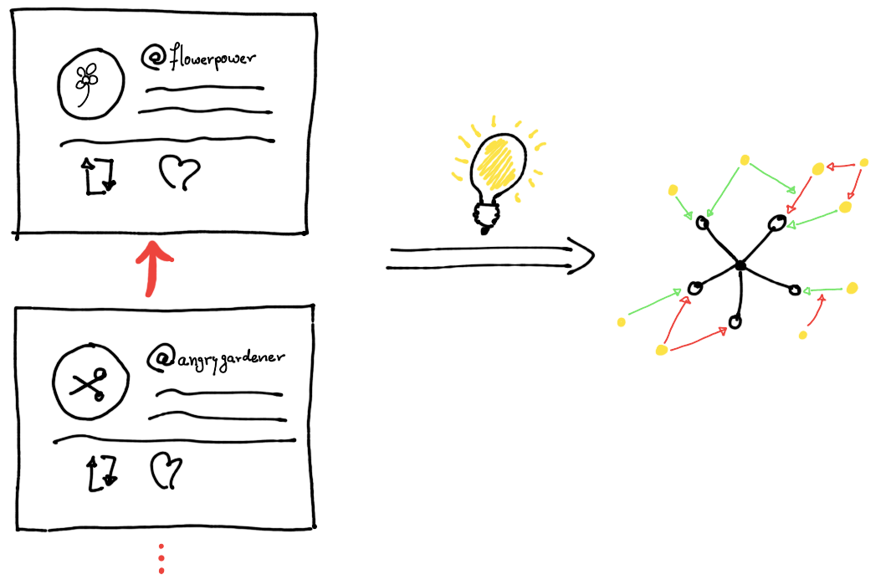

Christian Meter
Argumentationssysteme: Irgendwas mit Pferden und HühnernDiskussionen im Internet sind meistens unstrukturierter Natur
Dennoch wird man motiviert seine Meinung zu äußern
"Hinterlasst mir einen Kommi unter dem Video", "Was ist Ihre Meinung dazu?", ...
zu viele Beiträge
zu viele Meinungen für einen produktiven Diskurs
Redundante Aussagen
Ziel: strukturierte Diskussionen
Reduziere Redundanz
Fokussiere auf Argumentation
Unterstützt mit Argumentation Theory
Welche Vorteile bringen strukturierte Argumente?
Die Schnittstelle ermöglicht es uns neue Anwendungen mit dialogbasiertem Backend zu entwickeln
Verwenden wir doch dialogbasierte Diskussionen da, wo viele Menschen diskutieren
Vorschläge?
30 Kommentare mit ~3000 Wörtern...
... die anderen 578 Kommentare müssen wir uns auch noch anschauen
Wie viele Kommentare erhalten Onlineredaktionen?
"Since 7am this morning, people have left comments on the Guardian. About were blocked by our moderators."https://www.theguardian.com/technology/2016/apr/12/the-dark-side-of-guardian-comments
einbettbar in existierende Websites
Dialog-Based Execution Platform im Backend
Strukturierte Diskussionen in beliebigen Web-Kontexten
Globale Diskussionen
Anklicken für Demo
Bringen wir dialogbasierte Diskussionen z.B. nach Facebook
Welche Vorteile könnte das bringen?
Was sind Anwendungsszenarien innerhalb von Facebook?
2,07 Milliarden Benutzer in Q3 2017
davon 1,37 Mrd täglich aktiv
[1]
330 Millionen aktive Benutzer im September 2017 [2]
Chats / Posts sind Freitextfelder
Kaum Kontrolle über Diskussionsfluss
... und irgendwie wäre ein geführter Diskussionsfluss untypisch für die Plattformen
Um Inhalte aus Freitextfeldern zu extrahieren, brauchen wir eine Form der Sprach- / Textverarbeitung
Außerdem zeigt sich hier, ob unsere Systeme wirklich "dialogbasiert" funktionieren können
Machine Learning ermöglicht Verarbeitung von Text und Sprache in natürlicher Weise
Damit können wir Inhalte aus Freitexten analysieren
Schnittstellen zu allen großen Sozialen Netzwerken
Bild: materialup.comKünstliche Intelligenzen verwenden und treiben Machine Learning voran
Viele Frameworks werden mittlerweile zur Textanalyse angeboten
In kleinem Maße auch kostenfrei
Wir planen nun Techniken aus dem Machine Learning zur Textverarbeitung zu verwenden, um die Eingabe an D-BAS weiterzureichen
Wir verwenden Googles DialogflowWelche Probleme gibt es, wenn ich von einem strukturiertem System zu einer freien Form der Unterhaltung wechsle?
Verständnisprobleme bei der Interpretation der Eingabe
Interfaces von Sozialen Netzwerken nicht mächtig genug
"Gespräche" mit Chatbots eher unnatürlich
...
Wir haben noch viel zu Lernen...
Wie sieht der Sprachfluss mit einem Chatbot im dialogbasierten Diskussionskontext aus?
Was für Typen von Usern nehmen an meiner Diskussion teil?
Worüber wird gesprochen?
Welche Themenbereiche sind besonders interessant?
Können wir einen Konsens finden?
{kind=link}